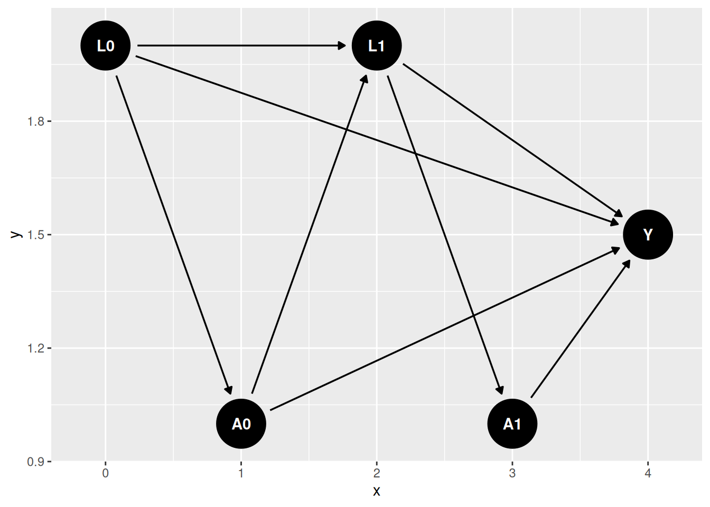

16 G-Methods for Time-Varying Treatments
Most chapters so far use one treatment decision. Many real problems are longitudinal. A patient receives medication at several visits. A worker can enter training in more than one year. Treatment changes over time, and covariates respond to past treatment. Those covariates then affect future treatment. Standard regression adjustment can fail in this setting.
Related reading: The g-estimation with time-varying covariates chapter of Topics on Econometrics and Causal Inference derives the identification result with sequential ignorability and applies the parametric g-formula to a worked binary-treatment example. The LMTP framework (for continuous and modified-policy interventions) is covered in Longitudinal modified treatment policy (LMTP) and in the Continuous Treatments chapter.
The main tools are:
- G-formula: simulate outcomes under a treatment regime.
- IPTW: reweight observations by the probability of their treatment history.
- Marginal structural models: fit a treatment-history regression in the weighted population.
- Longitudinal TMLE: combine outcome and treatment-history models.
16.1 The time-varying confounding problem
Consider a two-period example:
- \(L_0\): baseline covariate (e.g. health status at study entry)
- \(A_0\): treatment at time 0 (e.g. medication)
- \(L_1\): covariate at time 1, influenced by \(A_0\) (e.g. health status after first dose)
- \(A_1\): treatment at time 1, influenced by \(L_1\)
- \(Y\): outcome at the end of follow-up (e.g. mortality)
The DAG:

\(L_1\) is the problem variable. It confounds the effect of \(A_1\) on \(Y\), so we would like to adjust for it. But it is also affected by \(A_0\), so adjusting for it blocks part of the effect of \(A_0\). Regression without \(L_1\) is confounded; regression with \(L_1\) over-controls.
16.1.1 Simulating the failure of regression
Show code
set.seed(1)
n <- 5000
# Baseline covariate
L0 <- rnorm(n)
# Treatment at t=0 depends on L0
A0 <- rbinom(n, 1, plogis(-0.5 + 0.8 * L0))
# Time-varying confounder L1: affected by A0 (and L0)
L1 <- 0.5 * L0 + 1.0 * A0 + rnorm(n)
# Treatment at t=1 depends on L1
A1 <- rbinom(n, 1, plogis(-0.5 + 0.8 * L1))
# Outcome: each treatment has a direct effect of 0.5 on Y.
# A0 ALSO affects Y indirectly through L1 (A0 -> L1 -> Y): the L1 path
# contributes 1.0 * 0.5 = 0.5, so A0's TOTAL effect is 0.5 + 0.5 = 1.0,
# while A1's total effect is 0.5. Always-vs-never total effect = 1.5.
Y <- 0.5 * A0 + 0.5 * A1 + 0.5 * L1 + 0.5 * L0 + rnorm(n)
df <- tibble(L0, A0, L1, A1, Y)
cat("True total effect of always-treated vs never-treated: 1.5\n\n")True total effect of always-treated vs never-treated: 1.5Show code
Naive (no L1): A0=0.979, A1=0.834, total=1.813Show code
Naive (with L1): A0=0.545, A1=0.503, total=1.048Neither regression recovers the true total effect:
- Excluding \(L_1\) leaves confounding from \(L_1 \to A_1\) that biases \(A_1\)’s coefficient.
- Including \(L_1\) blocks the \(A_0 \to L_1 \to Y\) pathway, so \(A_0\)’s coefficient now measures only the direct effect, not the total effect.
This is exactly the setting g-methods were designed for.
16.2 Parametric g-formula
The g-formula writes the mean outcome under a treatment regime as:
\[ \mathbb{E}[Y(\bar a)] = \sum_{\bar l} \mathbb{E}[Y \mid \bar a, \bar l] \prod_{t=0}^{K} f(l_t \mid \bar a_{t-1}, \bar l_{t-1}), \tag{16.1}\]
where \(\bar a=(a_0,a_1,\ldots,a_K)\) is a treatment regime and \(\bar l\) is the covariate history. In practice, we fit models for the time-varying covariates and the outcome, then simulate the data under the treatment regime.
Show code
# Step 1: Fit models for each time-varying variable
# Model L1 | L0, A0
mod_L1 <- lm(L1 ~ L0 + A0, data = df)
# Model Y | L0, A0, L1, A1
mod_Y <- lm(Y ~ L0 + A0 + L1 + A1, data = df)
# Step 2: Simulate counterfactual outcomes under each treatment regime
# Regime 1: always treat (A0=1, A1=1)
# Regime 2: never treat (A0=0, A1=0)
# Because both mod_L1 and mod_Y are linear, E[Y | do(A0=a0,A1=a1)] could be
# obtained by a deterministic plug-in instead: substitute the conditional
# mean E[L1|L0,A0=a0] directly into mod_Y, without ever drawing rnorm(). We
# simulate a full stochastic draw of L1 here instead, because that approach
# generalizes directly to non-linear systems (e.g. a binary L1 fit with
# logistic regression, or an interaction between L1 and A1 in mod_Y) where
# E[Y | do(...)] is NOT just mod_Y evaluated at the plugged-in conditional
# mean of L1 -- you genuinely need to integrate Y's model over the
# distribution of L1, which Monte Carlo simulation does automatically.
g_compute <- function(a0, a1) {
L1_sim <- predict(mod_L1, newdata = transform(df, A0 = a0)) +
rnorm(n, 0, sigma(mod_L1)) # simulate from L1 | L0, A0=a0
Y_sim <- predict(mod_Y, newdata = transform(df, A0 = a0, L1 = L1_sim, A1 = a1))
mean(Y_sim)
}
# Monte Carlo: simulate many times to average over L1 distribution
set.seed(99)
B <- 100
E_Y11 <- mean(replicate(B, g_compute(1, 1)))
E_Y00 <- mean(replicate(B, g_compute(0, 0)))
g_effect <- E_Y11 - E_Y00
cat(sprintf("G-formula estimate (always treat vs never treat): %.3f\n", g_effect))G-formula estimate (always treat vs never treat): 1.548Show code
cat("True total effect: 1.5\n")True total effect: 1.5The important step is simulating \(L_1\) under the counterfactual treatment. We do not condition on the observed \(L_1\), because observed \(L_1\) is partly a consequence of observed treatment.
16.2.1 What if we wanted the effect of treating only at t=0?
The g-formula can handle other regimes too. For example, treat only at \(t=0\):
Show code
Effect of treating only at t=0: 1.045 (true = 1.0)This recovers the true effect of 1.0 from treating only at \(t = 0\) — the direct effect of \(A_0\) (0.5) plus its indirect effect through \(L_1\) (0.5). Note this differs from \(A_0\)’s direct effect alone (0.5): the regime \((1,0)\) lets \(A_0\) act through the mediator \(L_1\).
16.3 IPTW for time-varying treatments
IPTW reweights observations by the inverse probability of their observed treatment history. The stabilized weight is:
\[ SW_i = \prod_{t=0}^{K} \frac{f(A_t \mid \bar A_{t-1})}{f(A_t \mid \bar A_{t-1}, \bar L_{t})}. \tag{16.2}\]
The numerator uses treatment history only. The denominator also conditions on the covariate history up to and including \(L_t\) — the covariates measured just before \(A_t\). (Skipping \(L_t\) would leave the \(L_t \to A_t\) confounding intact in the pseudo-population.) Stabilized weights usually have lower variance than unstabilized weights.
Show code
# Estimate the propensity-score components at each time
# Numerator: P(A0) and P(A1 | A0)
n0_fit <- glm(A0 ~ 1, data = df, family = binomial)
n1_fit <- glm(A1 ~ A0, data = df, family = binomial)
# Denominator: P(A0 | L0) and P(A1 | A0, L0, L1)
d0_fit <- glm(A0 ~ L0, data = df, family = binomial)
d1_fit <- glm(A1 ~ A0 + L0 + L1, data = df, family = binomial)
# Probability of observed A at each time
p_n0 <- predict(n0_fit, type = "response")
p_n1 <- predict(n1_fit, type = "response")
p_d0 <- predict(d0_fit, type = "response")
p_d1 <- predict(d1_fit, type = "response")
w_t0_num <- ifelse(df$A0 == 1, p_n0, 1 - p_n0)
w_t0_den <- ifelse(df$A0 == 1, p_d0, 1 - p_d0)
w_t1_num <- ifelse(df$A1 == 1, p_n1, 1 - p_n1)
w_t1_den <- ifelse(df$A1 == 1, p_d1, 1 - p_d1)
# Stabilized weight (product over time)
sw <- (w_t0_num * w_t1_num) / (w_t0_den * w_t1_den)
cat(sprintf("Weight summary: min=%.3f, mean=%.3f, max=%.3f\n",
min(sw), mean(sw), max(sw)))Weight summary: min=0.267, mean=0.999, max=14.79216.4 Marginal structural models
With the stabilized weights, the marginal structural model is a weighted regression of \(Y\) on treatment history:
Show code
# MSM: linear in cumulative treatment.
# Use self-documenting column names so the trimmed vs untrimmed weights
# are never confused in the survey design formulas below.
df$sw_trimmed <- sw_trimmed
design <- svydesign(ids = ~1, weights = ~sw_trimmed, data = df)
msm_fit <- svyglm(Y ~ A0 + A1, design = design)
tidy(msm_fit) |> knitr::kable(digits = 3,
caption = "MSM coefficients with stabilized weights")| term | estimate | std.error | statistic | p.value |
|---|---|---|---|---|
| (Intercept) | -0.057 | 0.032 | -1.744 | 0.081 |
| A0 | 1.108 | 0.049 | 22.696 | 0.000 |
| A1 | 0.545 | 0.048 | 11.439 | 0.000 |
Show code
MSM total effect (always vs never): 1.652 (true = 1.5)Show code
Untrimmed MSM total effect: 1.560The weighted population is constructed so treatment is no longer associated with past covariates. That is why the MSM targets the total effect. Note the trimmed estimate sits a little above the truth while the untrimmed one is closer: the weight models here are correctly specified, so the untrimmed weights are consistent, and capping the top 1% of weights reintroduces a bit of confounding bias in exchange for lower variance. Trimming is a bias–variance trade, not a free lunch.
16.5 Longitudinal TMLE
The ltmle package implements longitudinal TMLE. It combines outcome models and treatment models; summary() reports the TMLE estimate by default (the IPTW estimate is available via summary(fit, estimator = "iptw"), and g-computation by calling ltmle() with gcomp = TRUE).
Show code
# ltmle expects a specific column order: covariates, treatments, outcome
ltmle_data <- df[, c("L0", "A0", "L1", "A1", "Y")]
ltmle_fit <- ltmle(
data = ltmle_data,
Anodes = c("A0", "A1"),
Lnodes = c("L0", "L1"),
Ynodes = "Y",
abar = c(1, 1), # the regime: always treated
estimate.time = FALSE
)
summary(ltmle_fit)Estimator: tmle
Call:
ltmle(data = ltmle_data, Anodes = c("A0", "A1"), Lnodes = c("L0",
"L1"), Ynodes = "Y", abar = c(1, 1), estimate.time = FALSE)
Parameter Estimate: 1.5106
Estimated Std Err: 0.03981
p-value: <2e-16
95% Conf Interval: (1.4325, 1.5886) Comparing the TMLE estimate with its IPTW and g-computation counterparts (via the options above) is a useful check on how much the answer depends on the modeling choices.
To estimate a contrast — the always-treated vs never-treated effect — specify both regimes:
Show code
Estimator: tmle
Call:
ltmle(data = ltmle_data, Anodes = c("A0", "A1"), Lnodes = c("L0",
"L1"), Ynodes = "Y", abar = list(treatment = c(1, 1), control = c(0,
0)), estimate.time = FALSE)
Treatment Estimate:
Parameter Estimate: 1.5106
Estimated Std Err: 0.03981
p-value: <2e-16
95% Conf Interval: (1.4325, 1.5886)
Control Estimate:
Parameter Estimate: -0.026342
Estimated Std Err: 0.030169
p-value: <2e-16
95% Conf Interval: (-0.085472, 0.032788)
Additive Treatment Effect:
Parameter Estimate: 1.5369
Estimated Std Err: 0.047618
p-value: <2e-16
95% Conf Interval: (1.4436, 1.6302) The contrast output gives the effect of always treating versus never treating. In this simulation it should be close to 1.5.
16.6 Choosing among the approaches
| Estimator | Strengths | Weaknesses |
|---|---|---|
| G-formula | Handles arbitrary regimes; transparent | Sensitive to model misspecification on \(L_t\) and \(Y\) |
| IPTW + MSM | Simple, intuitive; valid with correct propensity model | Variance can be large with extreme weights |
| LTMLE | Doubly robust; efficient | More complex; needs care with super-learners |
In practice:
- Use the g-formula when the covariate and outcome models are credible.
- Use IPTW + MSM when the treatment-history model is more credible.
- Use LTMLE when available and when the extra modeling work is justified.
16.7 When to reach for these methods
Use g-methods when:
- There is a time-varying confounder \(L_t\) that is affected by past treatment \(A_{t-1}\) and itself affects subsequent treatment \(A_t\).
- The research question concerns a sustained or dynamic treatment regime, not a single decision at a single time.
This includes many clinical follow-up studies and longitudinal studies of education or labor-market policies.
For a one-shot treatment, the methods from the Estimation and Nonparametric Causal Methods chapters are sufficient. The added complexity of g-methods is only justified when the time-varying confounder problem is present.
16.8 Summary
- Standard regression fails when a time-varying confounder is itself affected by past treatment.
- G-formula simulates outcomes under treatment regimes.
- IPTW + MSM reweights the population and then fits a weighted treatment history model.
- LTMLE combines the outcome and treatment-model approaches.
- Disagreement across estimators is useful information, not just a nuisance.